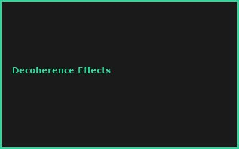
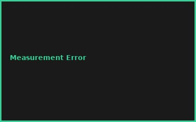
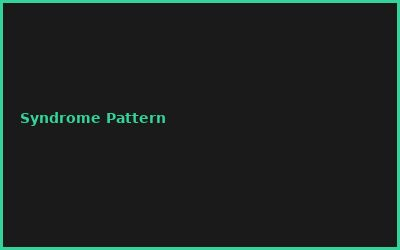
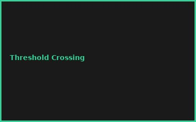

Kapitel 1: Qubit Basics & Errors
- Coherence & Decoherence Times
- T1, T2 Measurements
- Bit Flip, Phase Flip Errors
- Error Rates in Current Hardware
Kapitel 2: Stabilizer Codes
- Surface Code Architecture
- Syndrome Extraction
- Syndrome Measurement Circuits
- Code Distance & Threshold
Kapitel 3: Implementation on Real Hardware
- Qiskit/Cirq Simulation
- Mapping to IBMq/Google Chips
- Gate Fidelity Constraints
- Noise Model Simulation
Kapitel 4: Decoding Algorithms
- Minimum Weight Perfect Matching
- Machine Learning Decoders
- Real-time Decoding
- Latency Requirements
Kapitel 5: Scaling & Resource Estimates
- Logical Qubit Overhead (1000:1 physical:logical)
- Spatio-Temporal Code Distance
- Cryogenic Infrastructure Scaling
- Classical Controller Requirements
Kapitel 6: Practical Benchmarking
- Logical Error Rate Measurement
- Threshold Crossing Experiments
- Fault-Tolerance Demonstration
- Path to Practical Advantage
💡 PRO-TIPPS
🎯 Tipp: Surface Code für Anfänger
Problem: Andere Codes komplexer | Lösung: Surface Code = 2D, planar, best understood
💰 BUDGET-HACKS (90% SIMULATOR!)
💰 Hack: Qiskit Simulator statt Echohardware
Original: IBM Quantum Time: €50K+/Jahr | Hack: Qiskit Aer Simulator: €0 | Einsparnis: 100%
⚠️ FEHLER
❌ Fehler: Syndrome Messung zu langsam
Was passiert: Error Exponentialwachstum | ✅ Lösung: Fast measurement gates + real-time decoding
🌐 COMMUNITY
Quantum Error Correction Summit, Qiskit Community, QuTiP Users, IBM Quantum Forum
📸 Fehler-Galerie



